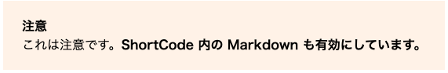

ショートコードの実装¶
ショートコードとは¶
ショートコードは、記事ファイル（Markdown ファイル）から呼び出せるカスタムスニペットです。 Markdown はシンプルな分、表現力が乏しいですが、ショートコードを使うと Markdown にはできないスタイルを追加できます。
HUGO では標準のショートコードが用意されていますが、自分でカスタムショートコードを実装できます。
- ショートコードの例
- 「注意書き」や「ヒント」などの説明ブロック
- 言語ごとに、記事の内容を表示/非表示にする
「注意書き」の実装¶
注意書きができるショートコード「warning」を作ってみましょう。 「注意」という文言は言語ごとに表示を切り替えられるようにします。
- 完成イメージ

ショートコードファイルの作成¶
themes/mythemes/layouts/の下に「shortcodes」ディレクトリを作成します。- 「shortcodes」ディレクトリの下に、次の内容で「warning.html」を作成します。
1 2 3 4 5 6 7 8
<aside class="warning"> <div class="warning-alt"> {{ with .Site.Params.caption_warning }}{{ . }}{{ end }} </div> <div class="warning-content"> {{ .Inner | markdownify }} </div> </aside>
Note
- HTML のファイル名がショートコード名です。
スタイルシートの調整¶
themes/mytheme/static/css/default.css を開き、次の内容を追記します。
1 2 3 4 5 6 7 8 9 10 | .warning { background: #fff4ea; margin: 1rem 0; padding: 24px; } .warning-alt { font-weight: 600; margin-bottom: 8px; } |
言語による表示の切り替え¶
表示する言語によって、「注意」となっているタイトルを切り替えできるようにします。
config.toml を開き、黄色の部分を追記します。
1 2 3 4 5 6 7 8 9 10 11 12 13 14 15 16 17 18 19 20 21 22 23 24 25 26 27 | [languages] [languages.en] weight = 1 title = "Hugo tutorial" LanguageName = "English" contentDir = "content/en" languageCode = "en-us" search_placeholder = "Enter search keywords" caption_warning = "Caption" [languages.ja] weight = 2 title = "Hugoチュートリアル" LanguageName = "日本語" contentDir = "content/ja" languageCode = "ja-jp" search_placeholder = "検索キーワードを入力" caption_warning = "注意" [languages.zh] weight = 3 title = "Hugo教程" LanguageName = "中文(简体)" contentDir = "content/zh" languageCode = "zh-cn" search_placeholder = "输入搜索关键字" caption_warning = "注意" |
ショートコードの呼び出し¶
content/ja/sample.md に次を記述します。
言語によってタイトル（「注意」の部分）が変わるかについても、content/en/sample.md や content/zh/sample.md にも同様に記述して確認してみましょう。
1 2 3 | {{< warning >}} これは注意です。**ShortCode 内の Markdown も有効にしています。** {{< /warning >}} |
Note
- ショートコードは
{{< ショートコード名 >}}{{< /ショートコード名 >}}と書くことで利用できます。 - タグで囲った部分は、ショートコードファイルの
.Innerで取り出しています。
特定言語でのみ表示する説明ブロックの実装¶
「英語の記事では表示して、日本語や中国語の記事では表示しない」といった、特定言語でのみ内容を表示できるようにしてみましょう。
ショートコードファイルの作成¶
themes/mythemes/layouts/の下に「shortcodes」ディレクトリを作成します。themes/mythemes/layouts/shortcodesの下に、次の内容で「description.html」を作成します。1 2 3
{{ if in .Params .Site.Language.Lang }} {{ .Inner | markdownify }} {{ end }}
ショートコードの呼び出し¶
content/ja/sample.md に次を記述します。
言語によってタイトル（「注意」の部分）が変わるかについても、content/en/sample.md や content/zh/sample.md にも同様に記述して確認してみましょう。
1 2 3 | {{< description ja en >}} この記述は日本語版と英語版でのみ表示されます。 {{< /description >}} |
Note
- ショートコード名の後の値（
ja en）は.Paramsで取り出せます。 - スペース区切りにしているので取り出した値は配列に格納されています。
inで配列内に現在表示している言語が含まれるか？をチェックして、存在すれば表示します。